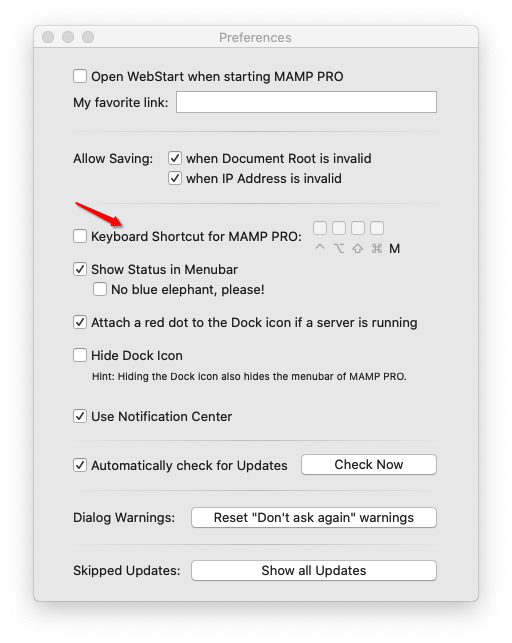
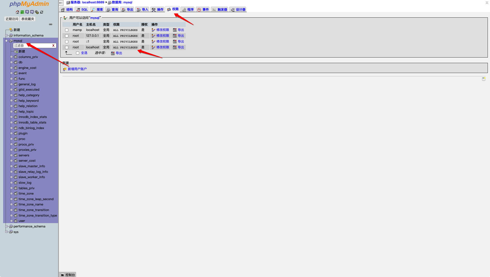
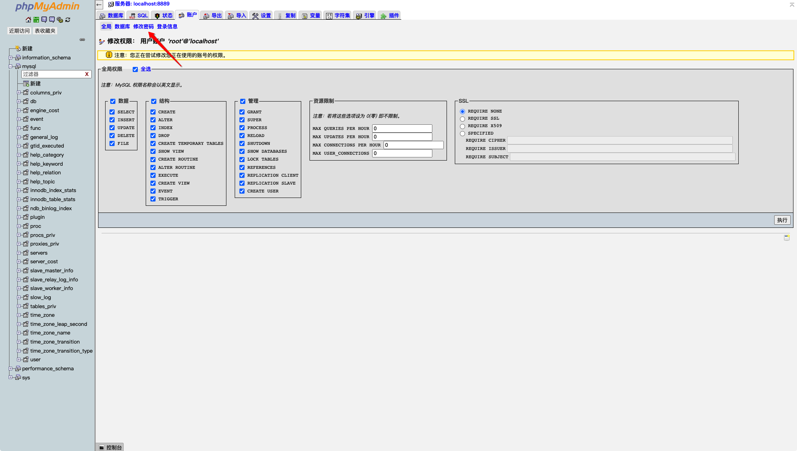
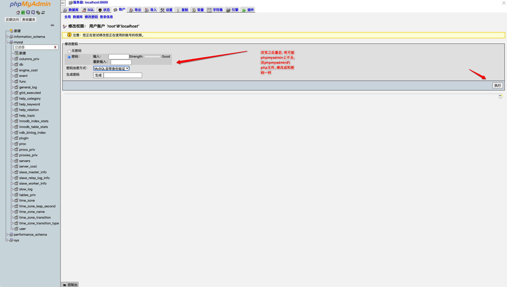
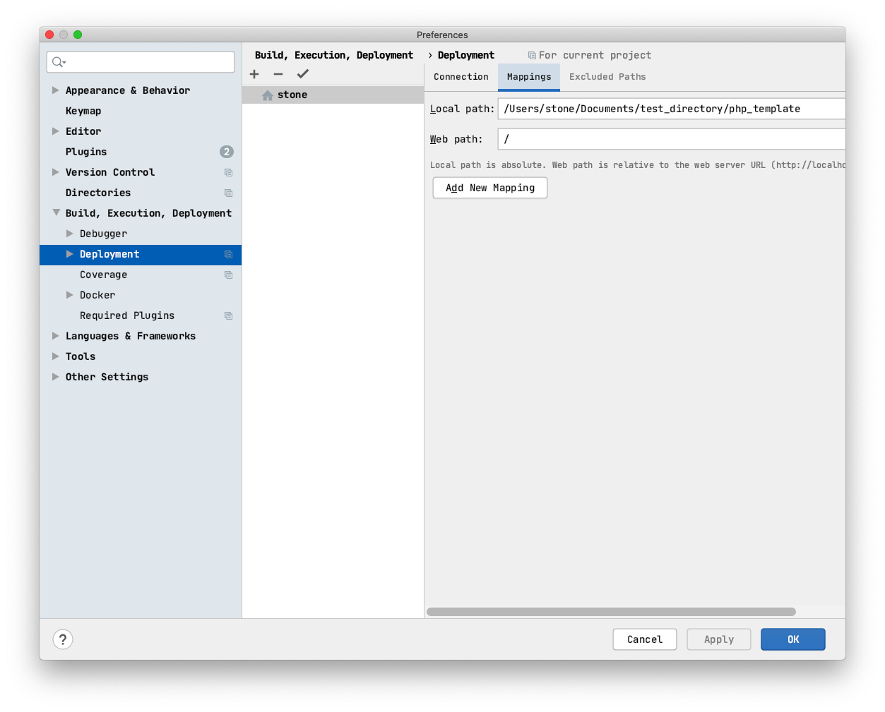
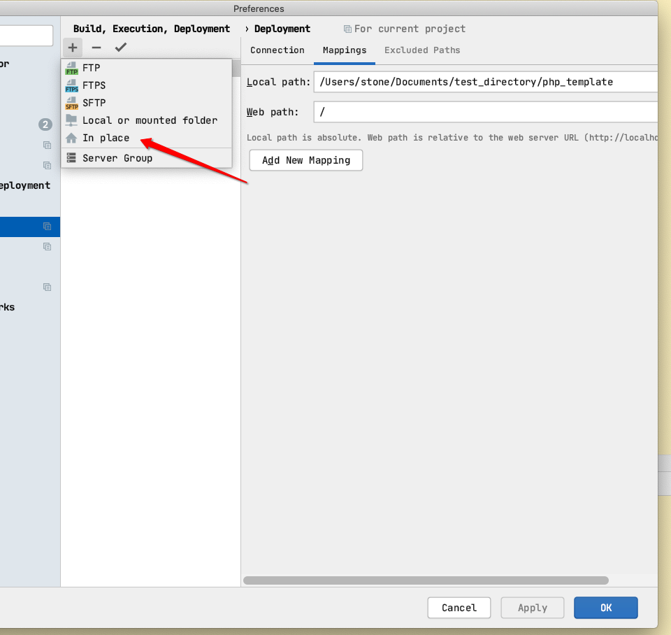

@(工作笔记)
MAMP-record

[TOC]

有快捷键
mysqladmin: connect to server at 'localhost' failed error: 'Access denied for user 'root'@'localhost' (using password: NO)'
https://www.youtube.com/watch?v=LKE1G4sinBM
/Applications/MAMP/tmp/mysql
subl my.cnf
在[mysqld] 下面添加 skip-grant-tables



phpmyadmin 修改密码
https://mycyberuniverse.com/mamp-phpmyadmin-mysql-root-password.html
If the MAMP app is running, click the
Stop Serversbutton and quit the app.In the Finder, go to the folder
Applications→MAMP→bin→phpMyAdmin.Open the file
config.inc.phpin a text editor. As a text editor, I use the TextEdit app, but you can use any other editor. The contents of the file may seem complicated in understanding, but do not worry, we will not change a lot of things.Use the search to find the line below. In my case, this line was 87th.
$cfg['Servers'][$i]['password'] = 'root'; // MySQL password (only neededReplace
'root'with an actual password of the MySQL root user.Save the changes and close the file
config.inc.php.Launch MAMP and click the
Start Serversbutton.Try to access the phpMyAdmin web page through the Safari browser.
The phpMyAdmin web page located at
localhost/phpMyAdmin/index.php.
MAMP的要跑起来 , 需要它的apache




brew 安装 apapche
» brew reinstall httpd stone@StoneParkMac
==> Downloading https://mirrors.ustc.edu.cn/homebrew-bottles/bottles/httpd-2.4.43.catalina.bottle.tar.gz
######################################################################## 100.0%
==> Reinstalling httpd
==> Pouring httpd-2.4.43.catalina.bottle.tar.gz
==> Caveats
DocumentRoot is /usr/local/var/www.
The default ports have been set in /usr/local/etc/httpd/httpd.conf to 8080 and in
/usr/local/etc/httpd/extra/httpd-ssl.conf to 8443 so that httpd can run without sudo.
To have launchd start httpd now and restart at login:
brew services start httpd
Or, if you don't want/need a background service you can just run:
apachectl start
==> Summary
🍺 /usr/local/Cellar/httpd/2.4.43: 1,658 files, 27.9MB
MAMP 中文文件夹乱码解决方案
1、打开注释：
# Fancy directory listings #Include /Applications/MAMP/conf/apache/extra/httpd-autoindex.conf Include /Applications/MAMP/conf/apache/extra/httpd-autoindex.conf
2、修改文件： /Applications/MAMP/conf/apache/extra/httpd-autoindex.conf
# # IndexOptions: Controls the appearance of server-generated directory # listings. # #IndexOptions FancyIndexing HTMLTable VersionSort IndexOptions FancyIndexing HTMLTable FoldersFirst Charset=UTF-8 NameWidth=*